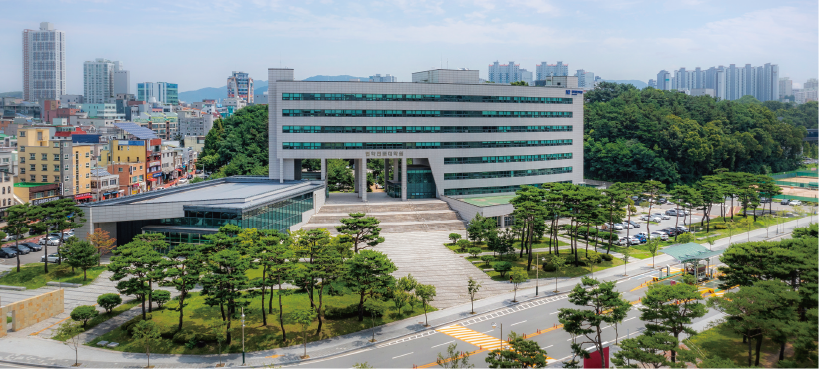

Here’s Future - Oriented Platform
COLLEGES
-
15
Colleges
and Schools
(Departments) -
9
Graduate
Schools1 General
1 Specialized
7 Special -
17,304
Undergraduate Students
(as of August 2023) -
3,244
Graduate Students
Masters: 2,559
Doctorate: 772
Integrated: 174
(as of August 2023)
-
College of Humanities
-
Dept. of Korean Language and Literature / Dept. of Chinese Language and Literature / Dept. of English Language and Literature / Dept. of German Language and Literature / Dept. of French Language and Literature / Dept. of Russian Language and Literature / Dept. of Philosophy / Dept. of History / Dept. of Archaeology and Art History
-
College of Social Sciences
-
Dept. of Sociology / Dept. of Psychology / Dept. of Public Administration / Dept. of Political Science and International Relations / Dept. of Economics
-
College of Natural Sciences
-
Dept. of Mathematics / Dept. of Information & Statistics / Dept. of Physics / Dept. of Chemistry / Major of Biology / Major in Microbiology / Major in Biochemistry / Dept. of Astronomy & Space Science / Dept. of Earth and Environmental Sciences
-
College of Business
-
School of Business / Dept. of International Business / Dept. of Management Information Systems
-
College of Engineering
-
School of Civil Engineering / School of Mechanical Engineering / Dept. of Chemical Engineering / Dept. of Advanced Materials Engineering / Dept. of Architectural Engineering / Dept. of Safety Engineering / Dept. of Environmental Engineering / Dept. of Engineering Chemistry / Dept. of Urban Engineering / Dept. of Architecture / *Dept. of Techno Industry Engineering
*Special contract department for workers
-
College of Electrical and Computer Engineering
-
School of Electrical Engineering / *School of Electronics Engineering / School of Information and Communication Engineering / Dept. of Computer Engineering / School of Computer Science / Dept. of Intelligent Systems and Robotics
*Planning on reforming it into Dept. of Electronic Engineering and establishing the School of Semiconductor Engineering in the 2024 academic year
-
College of Agriculture, Life & Environment Sciences
-
Major of Crop Science / Major of Environmental & Biological Chemistry / Major in Food Science and Biotechnology / Major in Animal Science / Major in Industrial Plant Science & Technology / Major of Horticultural Science / Major of Plant Medicine / Dept. of Forest Science / Dept. of Agricultural and Rural Engineering / Dept. of Biosystems Engineering / Dept. of Wood and Paper Science / Dept. of Agricultural
-
College of Education
-
Dept. of Education / Dept. of Korean Education / Dept. of English Education / Dept. of History Education / Dept. of Geography Education / Dept. of Social Studies Education / Dept. of Ethics Education / Dept. of Physics Education / Dept. of Chemistry Education / Dept. of Biology Education / Dept. of Earth Science Education / Dept. of Mathematics Education / Dept. of Physical Education
-
College of Human Ecology
-
College of Human Ecology / Dept. of Child Welfare / Dept. of Clothing & Textiles (Dept. of Fashion Design Information) / Dept. of Housing & Interior Design / Dept. of Consumer Science
-
Master’s Program
65departments 3divisions
-
Doctoral Program
58departments 3divisions
-
University-Industry-Research
Cooperation Program18institutions
-
Interdisciplinary Programs
17programs
The graduate school has a substantial curriculum based on in-depth research programs of basic, applied, and interdisciplinary studies. As of the 2023 academic year, the master’s program is run by 65 departments and 3 divisions with a total of 672 students. The doctoral program is run by 58 departments and 3 divisions with a total of 312 students. 18 institutions are participating in the university-industry-research cooperation programs and there exist 17 interdisciplinary program.
- Humanities and Social Sciences
- Natural Sciences
- Engineering
- Arts and Physical Education
- Medicine
- Interdisciplinary Program
- Special contract department for workers
SPECIALIZED GRADUATE SCHOOL
Law School
SPECIAL GRADUATE SCHOOL
- Graduate School of Education
- Graduate School of Industries
- Graduate School of Business
- Graduate School of Legal Affairs
- Sejong Graduate School of National Policy
- Graduate School of Veterinary Biosecurity and Protection
- Graduate School of Northern Agriculture